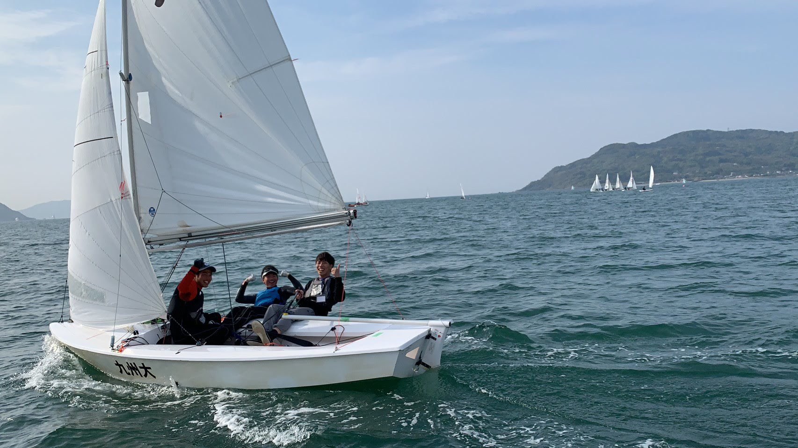

大切なことは
大志を抱き
それを成し遂げる
技能と忍耐と仲間を
持つことである
その他はいずれも重要ではない
－海洋冒険家 白石康次郎－
セールと呼ばれる帆に風を受けて
海の上を走る乗り物です
大学では2人乗りの470級とスナイプ級という2種類のヨットが使用されています。
海上で一斉にスタートし決められたコースをいかに早く回るかで順位が決まります。
大きなレースで70艇以上の船が海面を走り抜ける光景は圧巻です。
- 470級 -
470級の特徴は"軽くて速い"こと。
そして3枚のセールを用いて走る点です。
海上を飛ぶように走る姿は圧巻です。
- Snipe級 -
長い歴史のある船で
幅広い年代から愛されている船です。
船が重くスピードに差が出にくいため
風を読む力や戦術などが大事になってきます。
九州大学ヨット部
年間目標
「全日本インカレ総合優勝」
スローガン
「ひとつに」
2019年の戦績
九州インカレ団体戦総合優勝
全日本インカレ団体戦
470級12位 / Snipe級4位 / 総合8位
全国七大学対抗戦9連覇
（過去19大会中18回優勝）
全国約140大学にヨット部がありますが、九州大学ヨット部は1927年に創部された日本で一番伝統のあるヨット部です。
主将挨拶
芝洋斗
主将 470級スキッパー
九州大学ヨット部主将の芝です。
日本のヨット界で最も盛り上がるイベントといえる全日本インカレ団体戦で総合優勝する、つまり日本一になることを目標に九州大学は活動しています。
突然ですが、人生の夏休みとも言われる大学生活で部活をする意味とは何でしょうか？
バイトでお金を稼いで友達と旅行と行ったり、サークルでのんびりスポーツしたりすることもきっと楽しいでしょう。
しかしそこでは、本気で頑張ったが故の悔しさや感動は決して得ることは出来ません。 大学で部活をすること、
その意味はここにあります。
好きなだけ遊べるのも大学生までですが、目標に向かって本気で何かに取り組めるのも大学生までだと僕は考えています。
初心者がほとんどのこの部活で経験者ぞろいの強豪私立大学に勝つ。 これ程challengingな部活は他にありません。
日本一のためには君の力が必要です。共に頂点の景色を見ましょう。
興味のある方はまず試乗会へ。
部員数
選手・マネージャー
ヨット経験者・未経験者

九州大学ヨット部は未経験からヨットを始めた部員がほとんどです！ 「ヨットなんて競技知らない」 「乗ったこともないのに日本一を目指せるの？」そう思っているそこのあなた！！！部員の中には全日本の舞台で活躍した選手もいます！彼らの声を紹介します！
市川緋那
4年 470
九州大学ヨット部4年の市川緋那です。 新入生のみなさん、合格おめでとう！そして、長い受験勉強本当にお疲れ様でした。これから、新しい大学生活に期待がいっぱいだと思います。
私たちヨット部は11月に行われる全日本インカレ団体戦で優勝することを目標に掲げ、日々活動しています。
私は、中高6年間陸上部に所属していて、ガッツリ部活漬けの毎日を送っていました。
なので、大学に入ったらゆるめのサークルに入って、バイトしたり旅行したりして過ごそうかな〜となんとなく考えていました。
そんな中、いろんなサークルや部活の新歓を回って、1番惹かれたのがヨット部でした。 それはなぜなのか。 ひとつの理由としては、「日本一」という大きな目標に向かって、チーム全員が団結していると強く感じたからです。 話しかけてくださった先輩方は熱い人が多く、自分もこの集団に入りたい、こんなふうになりたいと思いました。 ヨット部に入れば、大学生活が必ず充実したものになると確信しました。
もうひとつは、大学から始める人が多く、初心者の自分でも全国の舞台に立てるチャンスがあると思ったからです。
九州大学ヨット部の部員ほとんどが、ヨット未経験で、新歓で初めてヨットに乗った人たちばかりです。
また、大学のヨットの大会は男女関係なく同じフィールドで戦います。
なかなか男女の区別のないスポーツはないので、女子でも男子に勝てるというのは私にとってとても魅力的でした。
大学で新しいことに挑戦したい人、
何かに本気で打ち込みたい人、
ヨットに乗ってみたい人、
そんな人はぜひ一度ヨット部の試乗会に来てください！！
佐田寛朗
3年 SNIPE
僕は、ヨットを何も知らない状態でヨット部に入りました。初めは、何も知らないのに、これからやっていけるのかと、心配や不安もありました。
しかし、九大ヨット部は未経験者が多く、初めはヨットの基本の基である簡単なヨットに乗ったり、知識をつける座学などを通して、未経験者でも互いに成長できる環境が整っていました。
昨年の全国大会では、レギュラーメンバー12名のうち経験者は2名で、あとは皆未経験者でした。中でも未経験者同士のペアが全国で5位なりました！
努力次第で全国でも戦える実力がつく！そんな魅力があるのがヨット競技です。今の九大ヨット部は、「全国大会優勝」を目指せる環境にあります。これを読んでいるあなたも、本気で努力して私たちと共に日本一になりませんか？
ヨット経験者で入部した部員からの
メッセージです。
伊藤仁
3年 Snipe
西南学院高校（福岡）出身
僕は高校からヨットを始めました。最初はなんとなく行ったヨット部の試乗会でのトラッピーズが楽しかったからでした。ですがその後、レースで前を走る楽しさ、負ける悔しさ、ヨットの奥深さを知りヨットにどんどんはまっていきました。結局僕は高校ではインターハイには出場できませんでした。それもあってか不完全燃焼で大学でもヨットをしたいと思っていました。
僕が高校1年生の時に高校ヨット部の活動場所でもあった小戸でインカレの団体戦があり、そこで目撃した早稲田大学の優勝した時の光景がとても印象に残っています。僕もその歓喜の輪の中に入ってみたいと思い、ヨットの強豪校へ進みたいという気持ちを持ちました。 一方で、国公立大学に進もうとも考えており、それを両立できる大学を探していました。そして地元の九州大学が国公立大学の中で一番強いことを知り、様々なことを考慮した結果、九州大学を受験することを決めました。そして浪人はしたのですが無事合格することができ、今に至ります。
九州大学のヨット部にはヨットが好きで熱く貪欲な人がたくさんいます！その人達と共に考え切磋琢磨できます！ヨットが上手くなるための環境は充分にそろっています！ヨットへの貪欲さシビアさは高校の時とは全然違います！
入部してもうすぐ2年になります。2年前、九州大学ヨット部を選んだ自分の選択は間違ってなかったと思います。あなたも熱く充実した4年間を九州大学ヨット部で過ごしてみませんか？
奥田祐大
2年 Snipe
長崎東高校（長崎）出身
わたしは、小学生の頃からヨットをやってきました。中学3年生の時にそれまでお世話になっていたジュニアクラブがなくなり、高校ではヨットはできないと思いましたが、他のジュニアクラブの方にお世話になり高校3年間も続けることができました。
高校2年生の時に九州大学にもヨット部があることをFacebookで知り、さらには国公立大学の中で人数も多く強豪校だというのを知り、ぜひこの部活に入りたいと思い九大を目指して勉強しました。そして無事、九大に合格しヨット部に入部することができました。
入部して強く感じたことは、九大ヨット部には多くのマネージャーのサポートがあり、選手がヨットだけに集中できる環境があるということです。選手からマネージャーへの信頼も固いため、マネージャーもやりがいをもてて、部に大きく貢献しているという意識を常に持つことができます。
これを読んでくださったみなさん、九州大学ヨット部に入りませんか？
川野由美子
マネリーダー
ご入学おめでとうございます！
93代マネージャーリーダーの川野由美子です。
ついに夢に見た自由な大学生活。"人生の夏休み"とまで言われるこの4年間、何にこの時間を捧げたいですか？
私は、3年前の4月、「本気で挑む悲願の日本一」に4年間捧げることを決めました。
よく言われる言葉があります。
なんでマネージャーなの？
なんでわざわざ縁の下の力持ちになるの？
なんでヨット部なの？
今まで100回くらい聞かれてます笑
前提として、マネージャーになりたいからヨット部に入ったのではなく、ヨット部で日本一になりたいからマネージャーになった。
の方が正しいです。
これは多分、ヨット部のマネージャーの共通点だと思います。
93年間成し遂げられなかった日本一を成し遂げ、優勝旗を持って全員で泣いて喜ぶ姿に心の底からワクワクしませんか？
私はその未来を想像した時、他の事と比較できないくらいワクワクし、その真ん中に絶対いたい(がめつくてすみません)と思いヨット部に惹かれました。
そして、自分が活躍できるのはマネージャーの立場であるという直感から入部宣言をしました。
他の部活との違いは、
「マネージャーが部活を動かす」
ここに尽きると思います。
なので私は縁の下の力持ちになりたいと思って行動したことは一度もないです。
自分の為になることをした結果、縁の下の力持ちになれてたらいいなと思って活動しています。
選手と同じ目線で、戦うフィールドがちょっと違うだけ。そんな感覚です。
こう思えるのは全国全部活、唯一無二の組織だと思います。
高校3年間ダンス部として表舞台に立つ華やかさと楽しさを経験しました。
マネージャーに華やかさは確かにない。
楽しいことよりしんどいことが多い。
目に見える結果なんて滅多に現れない。
それでもあの時の決断が正解だったなと思えるのは、友達とは全く違う他には変えがたい仲間と、自分を律してくれる他には変えがたい環境と、人生における他には変えがたい日本一という目標があるからです。
抽象的過ぎますが、実際にこの部活に入ってから嬉しくて、悔しくて、泣く程感情が動いた場面が何度もあったことをお伝えしておきます。
是非、実際に部員に会って、試乗会を体験して、皆さんの目でどういうことなのか確かめて欲しいなと思います。
(あえて具体的にやっている事は書きませんでした。試乗会に来て欲しいからです。笑)
最後に。
九州大学ヨット部を引っ張っていくのは、未来の後輩マネージャーだと心から思います。
マネージャーチームとして未だ到達できてない「悲願の日本一」というワクワクする姿に自分もいたいと少しでも思ってくれたそこのあなた。
一緒に挑みませんか？
そして、一緒に泣いて喜べる仲間として活動できるのを楽しみにしています。

高橋遥
2年マネージャー
新入生の皆さん、本当に本当に合格おめでとうございます！！！長い受験生活本当にお疲れ様です。これから楽しい大学生活が待っていてとても楽しみですね！
さて、皆さんは今、サークル何にしようかな〜？部活何にしようかな〜？と悩んでいるところだと思います。わたしも去年、新歓に行きまくって悩みに悩みまくりました(笑)
たくさん悩んだ末、ヨット部のマネージャーをすることに決めましたが自分で言うのもなんですが、私はマネージャーに向いていない性格だと思います。今まで中高と体育会系の部活に所属し、すごく負けず嫌いな性格で自分が運動するのがすごく好きでした。
では、何故わたしはサポートする側を選んだのでしょうか。
その答えは１つです。
"選手もマネージャーも部員一人一人が主役"
そんな部活を見つけたからです。
マネージャーというと皆さんのイメージはお茶を作ったり〜動画を撮ったり〜タイムを測ったり〜というものでしょうか？もちろん、それらも私たちの立派な仕事です。しかし九大ヨット部マネージャー一同は、''組織的''運営を目指しています。それらの仕事だけでなく、７つの部署に分かれて部の会計をしたり、トレーニングの管理をしたり遠征の準備をしたりみなさんの想像を遥かに超える細かい仕事をしています。
マネージャーだからできること、マネージャーでしかできないことがたくさんあります。
だからこそ自分が主体となって行動することで
選手が効率よく練習できる、それが勝利につながる。
部員一人一人の力が輝いて、私たちの部活は成り立っています。
わたしはこの1年間で確実に成長したと思います。入部する前までは、自信がなかった自分が今では自分の意見をきちんと伝えることができるようになりました。この1年間でヨット部から多くのことを吸収することができました。
最後に、わたしが胸を張って言えることは、
九大ヨット部は楽しいということです。
人も温かく、仲が良い部です。
海上で頑張っている選手、運営を頑張る同期・先輩マネージャーを見て、自分も頑張ろうと思える、九大ヨット部はそんな部活です。
日本一を目指すことは、決して簡単なことではありません。しかし、努力し日本一にこだわり続けることで掴みにいけるものだと信じています。
私達と一緒に日本一になりませんか？
ここでこの文章を読んでいるのも何かの縁です。
ぜひ1度、試乗会に足を運んでみてください！！
試乗会で感じるヨットの楽しさ、快走感に必ず感動すると思います。
部員一同みなさんの入部をお待ちしています！
大学院進学を目指す人は特に理系学部に多いです。院試は４年生の夏ごろにあり、まだ部活の引退前ではありますが、勉強と部活を両立させることはもちろん可能です。
多くの先輩が九州大学院への進まれます。
また、中には海外留学をする先輩もおり、現在はアメリカ、オーストラリア、ベルギーにいらっしゃる先輩もいます。
院生の先輩方は若手OBコーチとして、現役の練習や大会などでご指導いただいています。
ヨット部での経験は、社会に出ても大いに役立ちます。大学生のころから、飲み会でのマナーや目上の人への対応の仕方を学べるのは部活ならではです。これらの経験や、部活での取り組みは就職活動の際にとても有利になります。
また、九大ヨット部には様々な分野で活躍されているOB・OGの先輩方が全国各地にいらっしゃるので、自分が将来やりたいことについて詳しい人からアドバイスをいただくこともできます。
以下、近年での就職先の例です。
- マツダ株式会社
- 住友商事
- 三井物産
- 野村証券
- 三菱UFJ銀行
- 双日株式会社
- 鹿児島県庁
- 伊藤忠商事

申込方法
ヨット部公式LINEアカウントから受け付けています。下のQRコードからお友達登録をしてください！
試乗会・食事会の予約、入部希望、相談、わからない事などがあればどしどしご連絡下さい！ 多くの新入生の入部をお待ちしています！
試乗会日程
- （このサイトはサンプルです。）
- xx月xx日
- xx月xx日
- xx月xx日
- xx月xx日
当日の流れ
| 時間 | 活動 |
|---|---|
| 12:45 | 九大学研都市駅集合 |
| 14:00 | 試乗会開始 |
| 18:00 | 食事会開始 |
| 20:00 | 解散予定 |
当日の持ち物
- 濡れてもいい服（ジャージ等）
- 着替え（下着も）
- タオル
食事会日程
- （このサイトはサンプルです。）
- xx月xx日
- xx月xx日